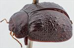
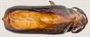
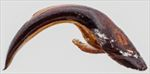
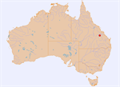

Click on images to enlarge
![Male, Blackdown Tablelands, central Queensland [QM]](assets/image/Ta215/Ta215_AGM-124_SM.jpg){kind=link}

Male, Blackdown Tablelands, central Queensland [QM]
{kind=link}

Aedeagus, dorsal view (Blackdown Tablelands, central Queensland)
{kind=link}

Aedeagus, lateral view (Blackdown Tablelands, central Queensland)
{kind=link}

Distribution
Name
Trachymela sp. Ta215
Reference specimen
GM-124, Blackdown Tableland, Central Queensland [QM]
Adult Description
Length: ♀ 5.9 mm [1], ♂ 6.0 mm [1].
Colour: head: uniformly dark reddish-brown with black-tipped mandibles, labrum yellowish-brown; antennomeres 1-6 light-brown, 7-11 similar or grading darker brown towards apex; pronotum: disc dark reddish-brown, same shade as head, grading to a very slightly darker shade towards lateral margins; scutellum: black; elytra: dark reddish-brown, similar shade as disc of pronotum with darker, even black, smooth, round verrucae, punctures similar in shade to interstices, humeral callus same colour or slighly darker than surrounds; venter: prosternum and thoracic ventrites very dark brown, legs similar, grading towards a fractionally lighter shade towards proximal segments, abdominal ventrites similar to thoracic or fracionally lighter in shade, elytral epipleura brown. Cuticular wax: a relatively even covering of dark-brown wax.
Shape: moderate-sized, slightly flattened, greatest height viewed laterally behind middle of elytral margin. Head; punctures moderately large (pd~2-2.5xef) and quite evenly and densely packed. Antennae short (AL ♂=38.3%BL, ♀=29.2%BL), filiform. Pronotum; almost evenly curved transversely, not at all explanate even at extreme margins, foveal depression absent with a shallow to more pronounced, round elevation in the same place, discal area smooth, puncturation clearly impressed, punctures similar-sized or slighly smaller than those on head and evenly distributed and moderately dense in discal area, a scatter of much finer punctures scattered among them, punctures becoming much coarser at lateral margins. Front margins join lateral margins in a smoothly rounded right-angle, with lateral margin curving relatively smoothly, evenly and gradually towards rear margin, pronotum is widest close to rear margin. Scutellum; smooth or shagreened, very lighly punctured with punctures similar in size as on adjacent area of pronotum, though usually less clearly impressed. Elytra; surface evenly curved transversely over centre of discal region, not explanate at margins, curved lighly and evenly and in anterior half longitudinally, with curvature increasing noticeably in posterior third, post-basal depression barely perceptible, punctures moderately large and distinct, evenly distributed over almost all of surface, larger in marginal area; interstices relatively flat to slighly convex with a scatter of very fine punctures, a number of verrucae that are round, smooth, unpunctured or with a fine central puncture arranged mostly along VR3, VR5 and VR7 (less densely along VR2, VR4 and VR6); basal section of VR3 raised as a continuous ridge; surface slightly discontinuous under humeral callus; lateral margin slightly sinuous, posterior half of marginal area concave. Vertical extension of epipleura moderate (HCE/PW=0.31-0.32). Venter; Prosternal process narrowing slightly anteriorly, closed anteriorly, a scatter of setae present along prosternal process and on mesosternum, a single seta on anterior and median trochanter; front edge of metasternum beveled, truncate; inner edge of posterior of epipleura lacking setae. Aedeagus; relatively short (LPE=26%BL), in dorsal view, sides narrowing slighly from basal sulcus then almost parallel or converging fractionally to near apical end of ostium from where they converge in a slighly uneven curve towards apex, spatula small, tip small, dorsal surface lightly sclerotized, with faint dorso-median channel, dorsolateral channels short, ostium relatively small with dorsal ostial processes relatively short, not extending past spatulum; in lateral view, moderately and almost evenly curved throughout its length, thinning gradually and evenly from about rear of ostium to the small and slightly deflexed tip.Larvae
unknown.
Eggs
unknown.
Similar species
Ta47 – this is a similar-sized species with the same shape and a similarly narrow elytral margin. It differs from Ta215 by lacking the round, smooth, discrete verrucae in the posterior half of the elytra.
Notes
A small species, uniformly dark brown and characterized by a series of relatively small, round, smooth, conspicuous verrucae arranged somewhat irregularly mostly along VR3, VR5 and VR7. The female is unusual in that the posterior of the elytral marginal area is prominently convex (rather than concave, as it is in the male).
The single host record is for the female specimen, which was collected from an unspecified stringybark species.
Copyright © 2026. All rights reserved.